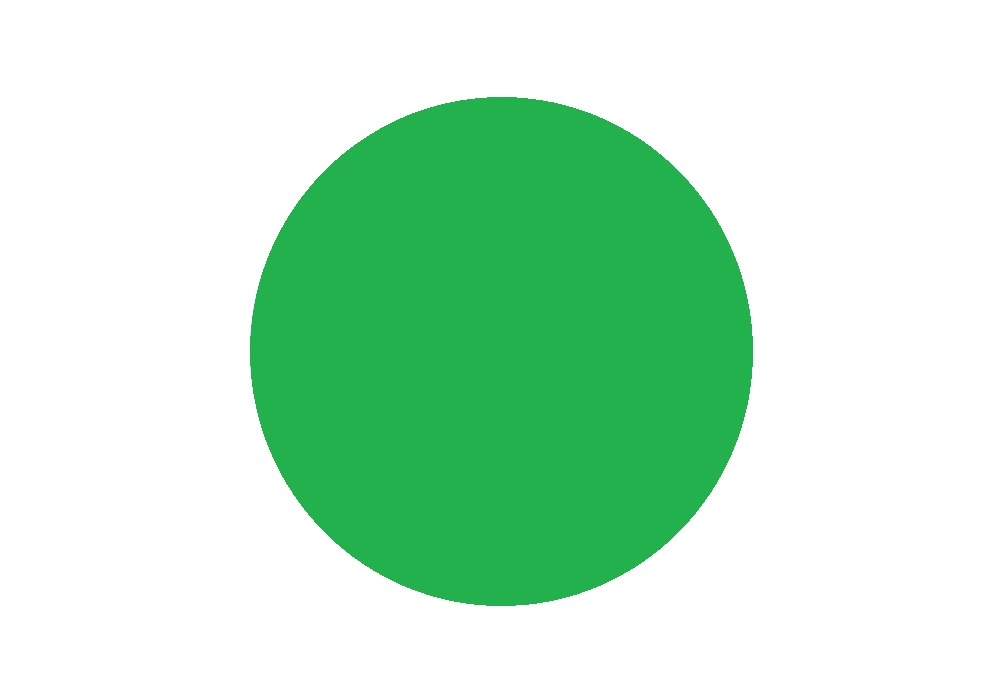

<!DOCTYPE html>
<html>
<head>
    <meta charset="utf-8" />
    <title>Cambia Imagenes</title>
</head>
<body>
    <!---->
    
    
    
    
    
    <!---->
    
    <!---->
    
</body>

<script type="text/javascript">
    //variable para guardar imagen por donde pasa el raton
    var mousout = "";
    window.onload = function () {
        //sacamos todas los objetosHTML img's
        var imagenes = document.getElementsByTagName("img");
        //guardamos en variable la imagen que se cambiará
        var newimage = "green.jpg";
        //añadimos a todas las imagenes un eventListener
        for (var imagen of imagenes) {
            //evento cuando el raton pase por encima
            imagen.addEventListener("mouseover", function () {
                console.log(this.src)
                //guardo el valor antiguo del src de la imagen donde paso el raton
                mousout = this.src;

                /*
                 * Si quiero usar una imagen aleatoria de entre var imagenes
                 * saco una imagen aleatoria dela array de ovbjetos img
                 * newimage = imagenes[Math.floor(Math.random() * imagenes.length)].src;
                 * */
                

                //cambio la imagen a newimage
                this.src = newimage;
            });
             //evento cuando el raton salga de la imagen cambiada
            imagen.addEventListener("mouseout", function () {
                console.log("fuera de " + mousout);
                //devuelvo la imagen a su src origen
                this.src = mousout;
            });
        }
    }
</script>
</html>